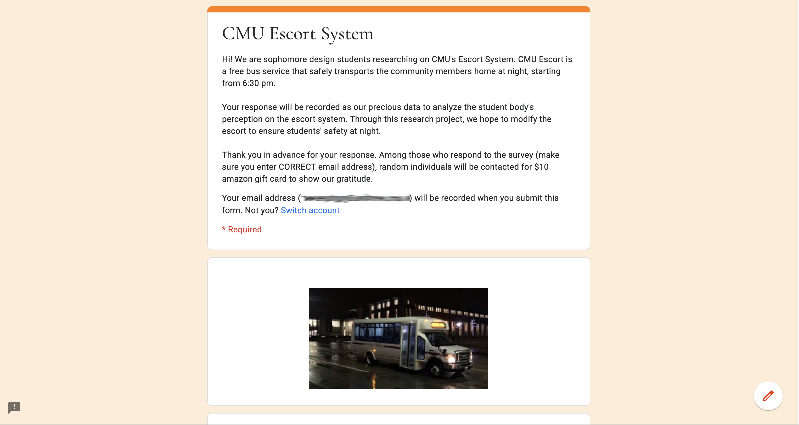

Take Me Home
Collaborators
Claire Yoon
Jamie Park
Time-frame
8 weeks | Jan-Mar 2020
Project overview
This project is research-intensive, aiming to find out ways to improve CMU’s escort service. The goal of this project is to make the escort system more approachable, usable and desirable.
01 Background
What is CMU Escort?
CMU escort is a bus service that transport students safely to their home from 6:30 p.m. to 6:30 a.m. There are five bus stations around the campus to pick up students. The buses come every 30 minutes.
Why does it need to be improved?
According to Michelle Porter, the director of Parking & Transportation Services, CMU spends millions of dollars on transportation each year but not so many students are using this service as they expected.
Goal
Improve the experience of the escort system in order to increase the usage of this service.
02 Initial Research
2.1 Stakeholder map
There are four major safety problems regarding cutting objects with the existing cutting tools.
2.2 Observation
To understand the users as well as the problem space better, I decided to experiment cutting with my eyes covered and created a storyboard showing how a visual impaired person approach cutting task step by step.
Some observation notes
2.3 Experience
To understand the users as well as the problem space better, I decided to experiment cutting with my eyes covered and created a storyboard showing how a visual impaired person approach cutting task step by step.
2.3 Survey
To understand the users as well as the problem space better, I decided to experiment cutting with my eyes covered and created a storyboard showing how a visual impaired person approach cutting task step by step.

2.5 Interviews
To understand the users as well as the problem space better, I decided to experiment cutting with my eyes covered and created a storyboard showing how a visual impaired person approach cutting task step by step.
03 Narrowing down the problems
Territory Map
To understand the users as well as the problem space better, I decided to experiment cutting with my eyes covered and created a storyboard showing how a visual impaired person approach cutting task step by step.